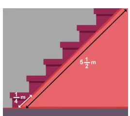
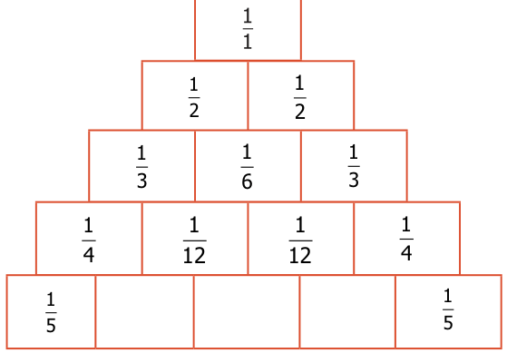
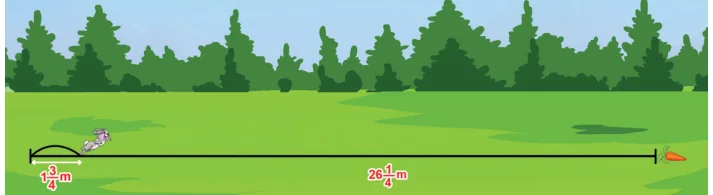
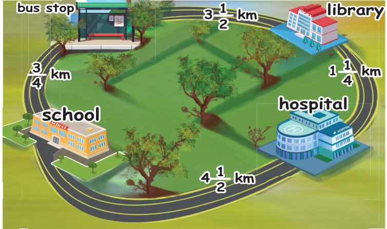

- Sankari purchased \(2\frac{1}{2}\) m cloth to stich a long skirt and \(1\frac{3}{4}\) m cloth to stitch blouse. If the cost is ₹120 per metre then find the cost of cloth purchased by her.
- From his office, a person wants to reach his house on foot which is at a distance of \(5\frac{3}{4}\) km. If he had walked \(2\frac{1}{2}\) km, how much distance still he has to walk to reach his house?
- Which is smaller? The difference between \(2\frac{1}{2}\) and \(3\frac{2}{3}\) or the sum of \(1\frac{1}{2}\) and \(2\frac{1}{4}\).

- Mangai bought \(6\frac{3}{4}\) kg of apples. If Kalai bought \(1\frac{1}{2}\) times as Mangai bought, then how many kilograms of apples did Kalai buy?
- The length of the staircase is \(5\frac{1}{2}\) m. If one step is set at \(\frac{1}{4}\) m, then how many steps will be there in the staircase?
Challenge Problems
- By using the following clues, find who am I?
- Each of my numerator and denominator is a single digit number.
- The sum of my numerator and denominator is a multiple of 3.
- The product of my numerator and denominator is a multiple of 4.
- Add the difference between \(1\frac{1}{3}\) and \(3\frac{1}{6}\) and the difference between \(4\frac{1}{6}\) and \(2\frac{1}{3}\).
- What fraction is to be subtracted from \(9\frac{3}{7}\) to get \(3\frac{1}{5}\)?
- The sum of two fractions is \(5\frac{3}{9}\). If one of the fractions is \(2\frac{3}{4}\), find the other fraction.
- By what number should \(3\frac{1}{16}\) be multiplied to get \(9\frac{3}{16}\)?
- Complete the fifth row in the Leibnitz triangle which is based on subraction. (Hint: \(\frac{1}{2} - \frac{1}{3} = \frac{1}{6}\), \(\frac{1}{3} - \frac{1}{12} = \frac{1}{4}\), ...).

- A painter painted \(\frac{3}{8}\) of the wall of which one third is painted in yellow colour. What fraction is the yellow colour of the entire wall?
- A rabbit has to cover \(26\frac{1}{4}\) m to fetch its food. If it covers \(1\frac{3}{4}\) m in one jump, then how many jumps will it take to fetch its food?

- Look at the picture and answer the following questions:

- What is the distance from School to Library via Bus stop?
- What is the distance between School and Library via Hospital?
- Which is the shortest distance between (i) and (ii)?
- The distance between School and Hospital is \(\underline{\qquad}\) times the distance between School and Bus stop.